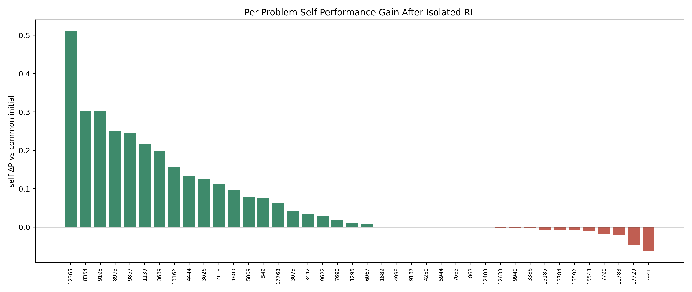
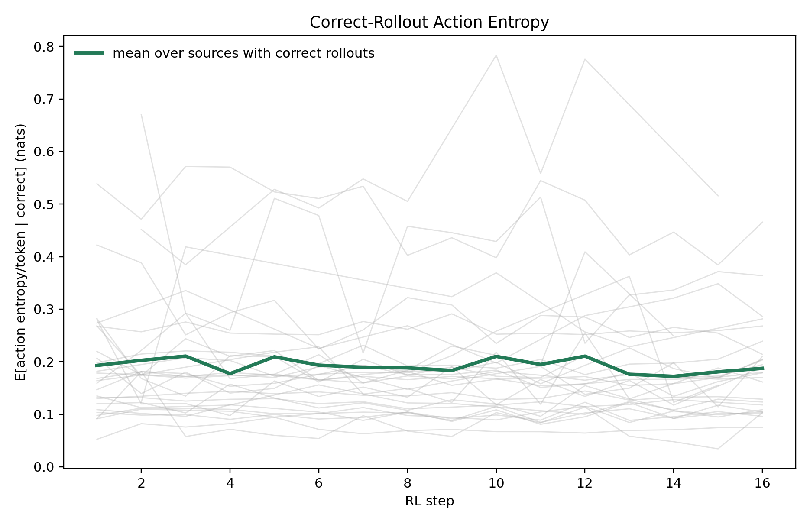
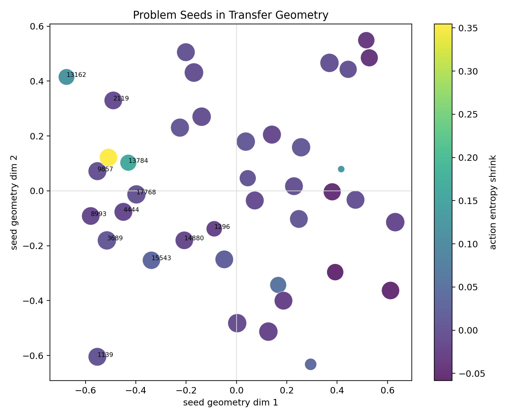
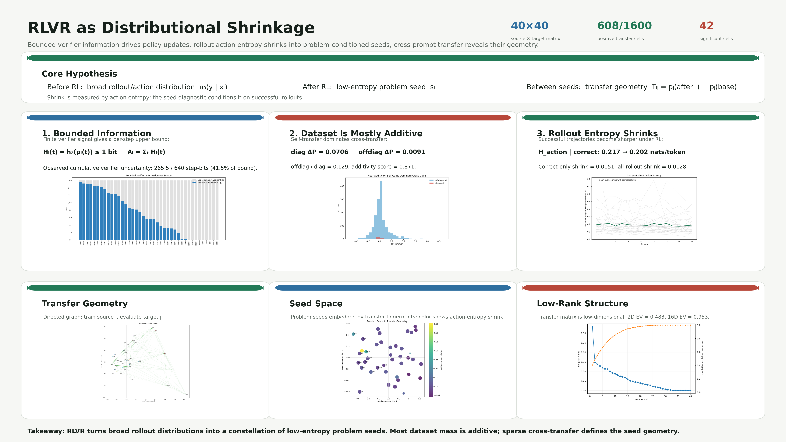

Verifier information, dataset geometry, and reward renewal
RL Information Bottleneck
Self-play renews verifier information; fixed-prompt LLM RLVR spends a finite verifier source; prompt-transfer geometry reveals how much of the dataset acts independently.
Core lens
Verifier rewards are not just sparse. They are sources with different renewal laws.
Traditional self-play
The opponent and state distribution move with the learner. Terminal rewards can stay close to the decision boundary, so outcome variance remains useful.
V_sp(t) = p_t(1 - p_t) ~= 1/4
Fixed-dataset LLM RLVR
The prompt set is fixed. Easy prompts become all-correct, hard prompts remain all-wrong, and only the middle band provides contrast.
V_i(t) = p_i(t)(1 - p_i(t)) <= 1/4
Diffusion-model RL
Diffusion RL can be viewed through the same source-and-allocation lens, but the current paper treats it as an early-stage extension rather than a finished result.
usable signal = reward variation aligned with controllable paths
1. Traditional RL
Self-play is a renewable verifier source.
AlphaZero-like systems learn from sparse terminal rewards, but the task distribution is not fixed. Self-play keeps generating contested states against a policy of comparable strength. The reward channel remains binary, while the source keeps refreshing.
- The same learner supplies both actor and moving opponent.
- Absolute strength can improve while self-play win rate stays near balanced.
- The information integral can grow with generated games and update budget.
2. LLM RLVR
Fixed-prompt RLVR spends a bounded verifier budget.
For a fixed mathematical prompt set, a deterministic verifier creates Bernoulli feedback per prompt. The useful contrast is bounded by the finite set of prompts and their current success probabilities.
- All-failure and all-success groups both provide weak policy-gradient contrast.
- Training is most informative near p_i(t) ~= 1/2.
- Prompt allocation and transfer geometry determine how efficiently the source is used.

3. Diffusion RL
A parallel frontier for verifiable generation.
The current manuscript keeps diffusion RL as a future extension. The same bottleneck question applies: does the reward source create fresh, controllable contrast across generated paths, or does it saturate like a fixed verifier dataset?
- Binary or scalar rewards can supervise generated samples.
- The key object is path-level reward variation, not raw reward noise.
- The open question is how to renew useful variation as the generator improves.
Working hypothesis
Diffusion RL should be analyzed by the geometry of denoising paths and by whether reward differences align with controllable generation directions.
Empirical geometry
Fixed-prompt RLVR is mostly additive, with sparse directed transfer.
The 40-problem Qwen2.5-7B pilot trains on one source prompt at a time and evaluates a shared target basis. The resulting transfer matrix sketches the dataset's local geometry.





Poster summary
RLVR as distributional shrinkage
Bounded verifier information drives policy updates. Rollout action entropy shrinks into problem-conditioned seeds. Cross-prompt transfer defines the geometry between those seeds.
Download poster PDFSelf-play renews information; fixed-prompt RLVR spends it; geometry shows how prompts interact.